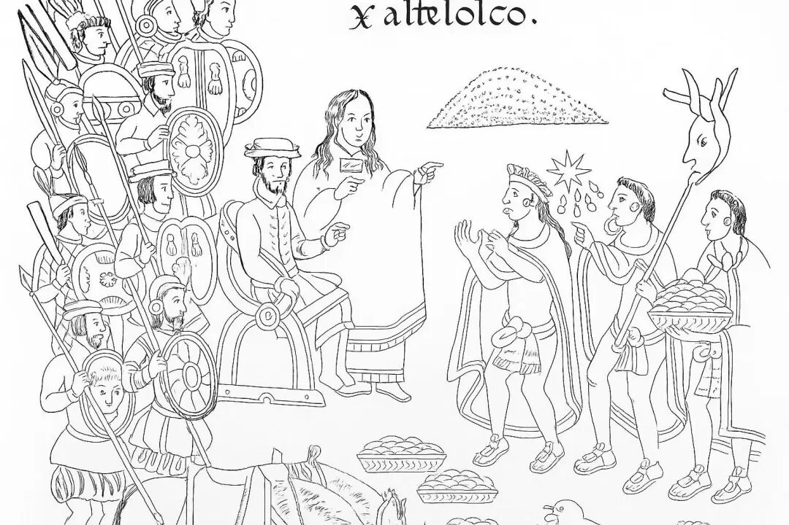
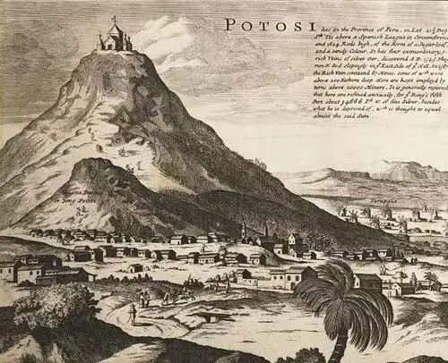
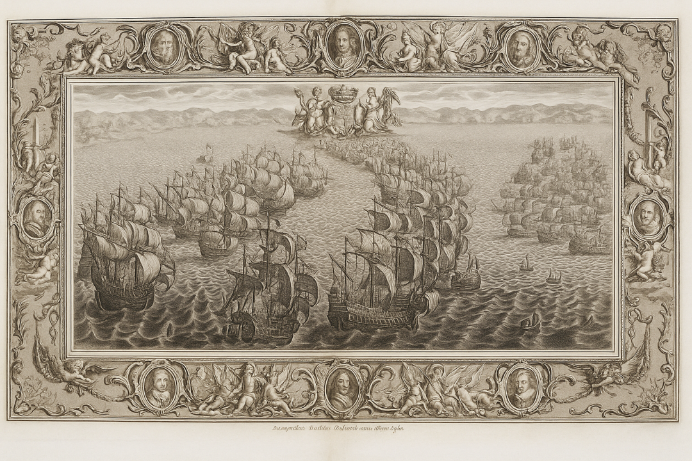

一切从黄金开始
若是在拉丁美洲旅行，你一定会诧异于眼前的景象：矿产丰富的高原和农业适宜的平原上，遍布着基础设施残缺的社区。为何一个资源如此充沛的地区，哪怕在独立两个世纪后，依然在全球经济体系中处于边缘地位？这个问题不仅困扰着当代经济学家和政治家们，更是拉美国家始终难以摆脱的宿命。
回望历史，我们必须从16世纪初一场影响深远的入侵开始讲起——当科尔特斯与皮萨罗跨越大洋抵达美洲，他们带来的不仅是枪炮与传染病，更植入了一种全新的统治模式。这种模式在不同时期不断演化、延续，成为拉丁美洲发展困境的根源。
大航海时代伊始，西班牙的冒险家们在书信和航海报告中不断渲染新大陆“遍地黄金”的奇观。这种狂热的描述很快点燃了帝国上层对财富的贪欲。在他们眼中，进行跨海航行的意义并不在于开拓、交流或传教，而首先是其作为巨大贵金属宝库的价值。埃尔南·科尔特斯，也就是后来大名鼎鼎的阿兹特克“征服者”，更是毫不掩饰：“我和我的同伴们患上了一种只能靠黄金治愈的病。”而所谓传教使命与帝国荣光，仅仅是聊以自慰的伪装，赋予掠夺以合法性的遮羞布。

西班牙人在新大陆（图中左戴帽者为科尔特斯）
早期的掠夺如同飓风过境，无数金银珠宝飞速地流进了西班牙的口袋。然而，这种赤裸裸的暴力虽然能短暂带来巨额财富，却不可持续。更致命的是，伴随着征服而来的旧大陆疾病和残酷奴役，正导致土著人口断崖式下跌。保守估计，到16世纪中叶，中美洲人口已锐减大半。劳动力，这个殖民事业赖以运转的“资源”本身，正急速地枯竭。贪婪的征服者与远在马德里的王室很快意识到：若不构建更系统、更持久的新机制，这场新大陆的饕餮盛宴终将嘎然而止。
于是，“如何更高效、更持久地榨取财富”成为了新的核心命题。答案便是将掠夺制度化、合法化、常态化。王室迅速以‘秩序’之名介入，实则为巩固统治而立法。原有的监护征赋制（Encomienda）被调整，以削弱征服者权力，从早期几近毫无限制的奴役，转变为理论上受王室法规约束、需履行“保护”与“教化”义务的劳役和贡赋征用体系。这看似是人道主义的进步，实则是将掠夺嵌入更精密、更隐蔽的框架之中。监护主（Encomendero）们逐渐成为“新西班牙”的既得利益者，而土著则被固化为提供劳动和贡赋的“被监护人”，并世代束缚于土地或矿场。
然而这仅仅只是一个开端。随着波托西等巨型矿产的发现，殖民者们对劳动力的渴求达到了前所未有的程度。一套更严酷、更高效、由国家直接操控的压榨机器登上了历史舞台，将整个拉丁美洲的原住民社会拖入了长达数百年的深渊。欧洲的殖民掠夺就此完成了从海盗式抢劫到国家资本主义式系统性榨取的蜕变。
波托西的地狱与殖民主义的金库
1545年，安第斯山脉上一处本不起眼的地方因意外发现成为了后来整个西班牙帝国的财富中心。这座被印加人称为“富饶之山”（Cerro Rico）的巨大矿脉不久后便吸引了成千上万的殖民者、投机者和劳役民众。而山脚下的波托西迅速崛起为美洲当时的最大城市之一，甚至一度被誉为“让全世界垂涎的山”。支撑其运转的，正是一套被精心制度化的复杂体系。

波托西，1715
为了满足波托西的庞大劳动需求，殖民政府在时任秘鲁总督弗朗西斯科·托莱多推动下于1574年引入并重构了印加传统中的米塔（Mit’a）制度。该制度最初是一种以集体主义为导向的公共机制，村社成员按周期轮流参与国家组织的农业、水利、运输等建设任务，本质上不具剥削性质。然而，西班牙殖民当局却将其扭曲为一种彻底服务于帝国需求的制度化压榨方式，即殖民米塔制。
根据这一安排，安第斯成为了米塔制度的“特定劳役供给区”（Provincias de la mita），每年需要向波托西输送固定比例的成年男性劳动力。这些被称为“米塔工”的土著在为期一年甚至更久的工期内，被强制分派到矿井深处从事采矿、运输、冶炼等高强度、高危险的工作。矿井的工作环境堪称地狱：空气稀薄、含毒粉尘弥漫、炼银工艺极度有害，每年因工殒命者成千上万。据记载，17世纪初，仅波托西银矿一处，每年就会消耗掉数千乃至上万名劳工的生命。
殖民米塔制的严酷之处不仅在于其强制性与高死亡率，还在于其彻底制度化的组织逻辑。这一制度由殖民政府以法律形式确立，各村社按人口比例输送劳工，地方领主和西班牙官员共同负责监督和执行，构成一个利益交织的剥削网络。被抽中者完全无法抗拒，不仅需承担长途跋涉、失去生计来源的风险，还要面临矿井中的沉重劳役与严重健康损害，其家庭则常因劳力抽调而陷入贫困和解体。
波托西的米塔制度是最典型的系统性压迫，但殖民美洲的途径远不止于此。西班牙在整个美洲广泛地先后实施了包括监护征赋制、徭役制（Repartimiento）和奴隶制在内的多种强制劳动体系，系统性地榨取土著和黑奴，用于矿业、种植园、交通建设乃至宗教工程。这些制度表面上承诺给予“教化与保护”，实则构成赤裸的压迫，使原住民陷入劳动负担、身体摧残与身份污名的深渊。
这些制度所带来的高死亡率同样令人震惊。劳役之苦与欧洲人带来的天花、麻疹、伤寒等疾病叠加，给本地人毁灭性的打击。一旦本土劳动力枯竭，殖民者便从非洲大量引入黑奴以填补劳工缺口（Asiento），进一步扩展了强迫劳动的规模与暴力程度。这种对劳动力的持续掠夺，不仅摧毁了原有社会的再生产机制，也使大量村社失去正常的农业与技术传承，从而陷入经济、人口与文化的断裂状态。尤其在安第斯地区与中美洲高原，许多区域从17世纪起便出现“劳动空洞”与“社会空心化”现象，至今仍是经济最为贫困的地区之一。
与此同时的大洋彼岸，波托西所产出的白银成为西班牙王室最重要的海外财政支柱之一。16世纪末至17世纪，波托西每年产银约达300万至500万枚西班牙比索，其中五分之一作为皇家税（Quinto Real）缴纳给王室。其余部分则由矿主、商人和运输集团转手流入全球市场。这些白银自利马出发，穿越巴拿马，经墨西哥韦拉克鲁斯港进入大西洋，最终运抵塞维利亚——欧洲最早的“银本位”金融中心之一。
这些贵金属不仅极大充实了西班牙的国库，也成为支撑其庞大战争开支与“无敌舰队”（Armada）的关键资源。同时，西属墨西哥的白银还被运往菲律宾，再转运至印度、东南亚、以及明清时代的中国，成为全球贸易的硬通货。然而，这场由拉美白银推动的物价革命却并未反哺其产地。财富几乎不在当地停留，而是被迅速抽取外流，形成完全单向的流动格局。殖民地的角色被限定为资源供给者，而非经济发展的主体。即便是波托西本身，也没有形成可持续的城市化或产业积累。其财富被外部势力不断抽空，留下的是环境破坏、劳力耗竭与社会断层。

西班牙无敌舰队
与之形成鲜明对比，西欧部分国家，尤其是英国与荷兰，利用贵金属的涌入，发展出了金融信用系统、股份公司与早期工业体系。荷兰的阿姆斯特丹银行便是借助拉美白银稳定币值，支撑起初期的商业信用；而英格兰银行的国债制度也间接建立在对海外殖民收益的预期之上。更重要的是，西欧逐渐将这些财富转化为对技术与生产的投资，从而逐步完成了从掠夺到发展的路径转换。
阿姆斯特丹银行的16磅银条，可能来自波托西
反观美洲，殖民体系刻意压制本地的工匠传统与手工业网络。这种制度性的去工业化扼杀影响极其恶劣与深远。拉丁美洲最终被锁死在“资源诅咒”中。数百年来乃至现在，拉丁美洲的经济始终依赖于初级产品输出，尚未能形成稳定的产业结构，因此迟迟未能跨越进入现代经济的门槛。
白银已去，枷锁犹在
殖民掠夺不仅发生在物质层面，更深植于制度结构之中。经济学家Acemoglu和Robinson所谓的“汲取性制度”（Extractive Institutions），指的是由少数统治者设计与运作，为了剥夺大众财富、限制经济自由和固化社会等级的制度安排。在殖民语境下，其主要特征表现为垄断生产资源、强迫劳动、限制本地技术传播与市场发展、以及集中政治权力。殖民者们并不建设本地经济或改善民众生活，而是保持最低成本将财富最大限度地输送至宗主国。因此，任何有利于本地经济积累与自主发展的因素，都被认为必须被系统性地压制。
拉丁美洲正是“汲取性制度”理论的现实范本。自大航海时代西班牙殖民以来，当地广泛建立起一整套围绕贵金属开采、强迫劳动和贡赋体系等展开的制度结构，均以榨取为核心，压制个人产权、工商业与社会流动性。这些制度不仅使原住民群体陷入系统性贫困，也使得殖民地区整体缺乏建立包容性经济基础的可能性。此后的数百年间，即使剥削性制度消亡，其影响依然波及广袤的拉丁美洲。
米塔制度的后效
米塔制度于19世纪中期正式废止。但即使在制度终结近两个世纪的今天，秘鲁和玻利维亚部分原米塔区仍然普遍呈现出基础设施落后、贫困率居高、人口流失严重等发展困境，成为殖民制度遗产影响的典型缩影。
最具代表性的实证研究来自哈佛大学的经济史学家Melissa Dell。通过对比秘鲁境内的前米塔覆盖地区与非覆盖地区的现代经济数据，她发现前者在20世纪末期的平均家庭消费、儿童身高、教育水平、基础道路密度等指标上，均显著低于邻近未受米塔影响的地区。即便控制了地理、气候和前殖民人口密度等变量，差异依然显著。这充分说明米塔制度留下的不仅是一时的经济创伤，而是跨越数代仍延续的结构性劣势。
而这一现象主要源于以下三个层面：
首先是人口与社区结构的断层。米塔制度依靠对成年男性的周期性强征，将劳动力强行抽调至数百公里之外的矿山，只留下老弱妇孺支撑残缺的村社。这不仅瓦解了本地农业生产与传统手工业的传承，也使村落长期陷入人口萎缩、文化凋敝与社会资本耗散的恶性循环。实际上，许多米塔村庄已形同“活死人村”，不仅丧失了经济活力，也失去了争取资源的政治力量。
其次是基础设施与市场接入的结构性排斥。米塔制度按需汲取劳力，拉丁美洲本土成为了殖民者的劳动资源而非经济单元。殖民政府无意投资道路、水利、教育或卫生体系，资源仅仅集中于输出通道与矿区腹地。这种将本土边缘化的格局在独立后继续延续：新政府继承了殖民秩序的逻辑，将这些区域视为“沉默地带”，缺乏将其整合至国家发展蓝图中的意愿与能力。基础设施的缺失反过来又强化了其市场孤立，形成贫困-忽视-更贫穷的制度性自我强化机制。
最后是制度性记忆与信任体系的断裂。米塔制不仅是经济剥削，更是权力压迫的制度化象征。长期处于被征调、监控的模式使得这些社区对政府极度缺乏信任，基层政治组织发育畸形，民众参政意愿低落。直到今天，这些地区的政府信任度、选举投票率、社区协作能力均明显偏低，进一步导致国家推进扶贫、教育、产权改革等政策时屡屡受阻。人们学会了如何躲避国家、怀疑市场，因此难以形成共同治理的社会文化基础。
值得注意的是，这种现状并非米塔地区所独有。在危地马拉高地，墨西哥南部的恰帕斯州，乃至巴西东北部的前种植园带，类似的强制劳役制度也留下了相似的后果。这些地区并不缺乏自然资源，却长期被排除在国家的核心之外，陷入被遗忘的轨道。米塔制度的后效不只是历史遗产，更是一种空间与制度意义上的持续性剥夺。
独立后缺乏改革
19世纪初，在拿破仑战争与民族主义浪潮的推动下，拉丁美洲相继独立，欧洲的殖民统治逐步瓦解。然而，政治独立并未带来制度的根本性转变。事实上，在大多数新兴共和国中，原先那些服务于殖民掠夺的制度不仅被原封不动地保留，甚至被本土精英阶层进一步强化，并成为其确保自身统治合法性的基础。
这类延续首先体现在土地与资源的垄断格局未得到根本改变。殖民时代，大量土地被分配给极少数的贵族与教会。独立后，许多新国家并未推行真正意义上的土地改革，反而在战乱结束后因财政低迷，通过拍卖土地，进一步扩大了大地主阶级的权力。例如在墨西哥与秘鲁，数百个地主家族在19世纪中叶便掌控了该国大部分耕地，使广大贫农继续被束缚于半奴隶的状态，更不用说社会流动的可能性。
此外，新生政权的结构性排他性依旧存在。殖民政府的集权制与行政等级虽名义上已解体，但新共和国政府并未真正将底层民众纳入其中。多数国家在19世纪的大部分时间里严格限制中下阶层参与政治；军政府的政客们大多出身行伍，他们与寡头联盟操纵选举、随意撰写法律，将国家机器用于巩固既得利益。
最重要的是，拉丁美洲的经济发展战略仍然具有很强的路径依赖。独立后，大多数国家并未跳出对原料出口和资本依赖的殖民逻辑。银矿、咖啡、甘蔗、铜矿、橡胶、香蕉等商品继续主导对外贸易，国家财政严重依赖关税收入，而制造业和轻重工业则长期被忽视甚至受到打压。玻利维亚独立后再次延续了对矿业的依赖，缺乏多元化的国内外投资；而阿根廷虽拥有快速增长的出口农业，却从未建立起配套的工业体系。这种单一的经济使拉丁美洲持续暴露于国际市场波动和商品价格剧烈起伏的风险之下，十分脆弱。这正是资源诅咒的制度性根源。
繁荣和贫困并存的巴西
拉丁美洲的未竟之路
如果波托西的银矿从未被发现，那些沉睡在安第斯山脉深处的宝藏，是否仍会静静守护着另一种可能的未来？或许秘鲁高原上的城市早已遍布学校、医院与自由市场，而不是只留下破碎的矿道与消逝的劳工？但历史选择了另一条路，财富滚滚流出，却未留下任何积极的遗产。正如切·格瓦拉曾愤怒指出：“拉丁美洲的国家成了世界上最富裕国家的附庸，其土地资源被榨取，而我们的人民却被贫穷、文盲与疾病像瘟疫一样笼罩。”这不仅仅过去的谴责，更是对未来的警示。殖民者们曾把掠夺写入拉丁美洲的土地，如今更需努力用包容性制度将未来写回人民手中。未竟之路尚长，但唯有认清其起点，才可能重塑其终点。